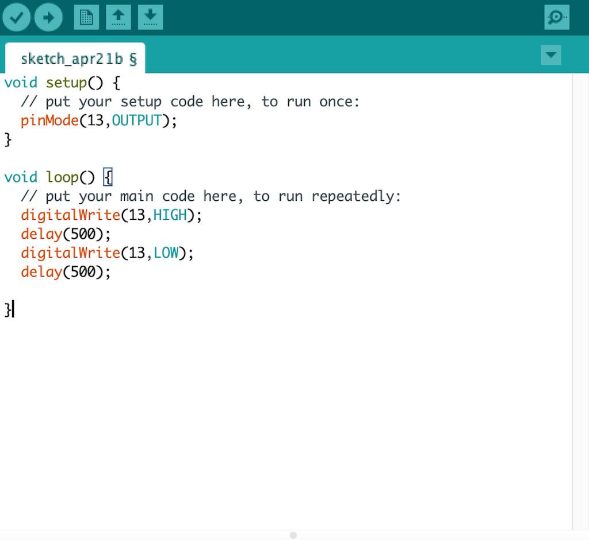
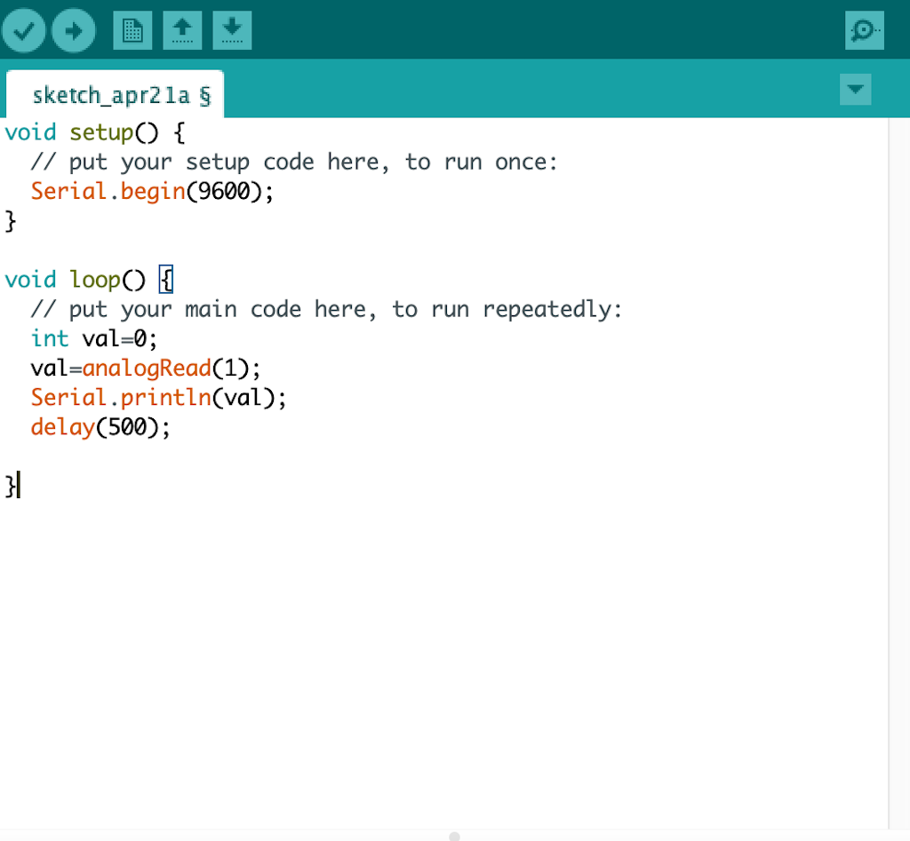
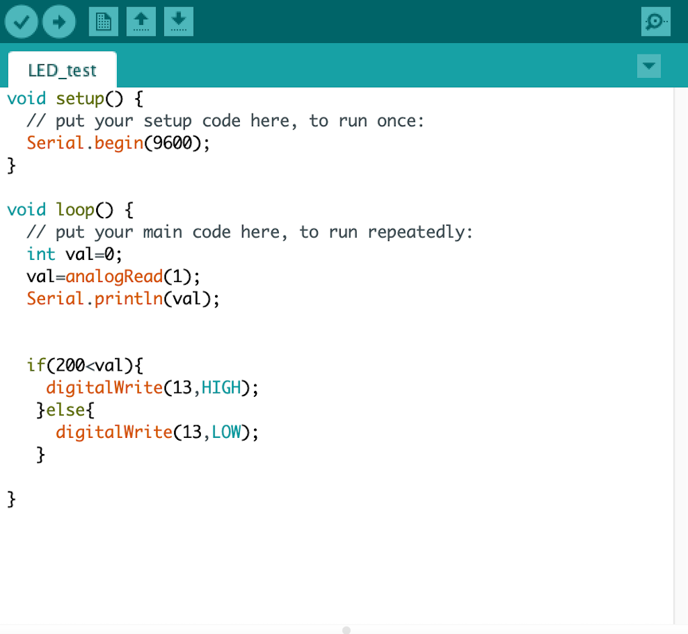

使用したもの
・
Arduino UNO(外部サイト)
マイコンボードとは
マイコンボードとは、マイクロコンピュータと入出力回路などの周辺回路を一枚の基盤に乗せ、手軽にマイコンボードを利用するための回路です。
Arduinoとは
Arduinoは動作に必要な開発システムをArduinoのWevサイトからダウンロードできるオープンソースハードウェア。
AVRマイコンや入出力ポート、Arduino言語による統合開発環境が用意されており、すぐに電子工作を始められる手軽さから世界中で人気を集めている。
マイコンボードでできること
①Lチカ
LEDは長い方が＋、短い方が-
+はアノード、-はカソードという。
配線
LEDの＋を十三番ピン、ーをGND（グランド）につなげる。
GNDとは電気回路で基準電位との電位差が０Vである部分のこと。
Lチカプログラム

②明るさセンサー
配線
ブレッドボードを使ってArduinoの5Vー10kΩの抵抗ーCdSセルーArduinoのGNDの流れができるような配線する。
その後、10kΩの抵抗とCdSセルが繋がっている列からArduinoのA1ピンに配線する。
ブレッドボードは、各種電子部品やジャンパ線をボードの穴に差し込むだけで、 はんだ付けをしなくても、手軽に電子回路を組むことの出来る基板。
(引用)
プログラム

③シリアルモニタと応用
シリアルモニタを確認すると暗くなると数値が大きくなる。
これを応用して暗くなるとLEDが光るプログラムを作成する。
プログラム

val=analogRead(1);はアナログ１番ピン(A1)の値を読むことを意味しています。
また、デジタルは01の世界と言われており、Arduinoの例でいうと0=0V(LOW)、1=5V(HIGH）。
0→0V
1023→5V